Le bel ouvrage, de père en fils.
Fondée par Joseph Beati et reprise par ses fils Lionel et Steve, notre entreprise familiale plâtre, peint et rénove intérieurs et façades dans le Nord vaudois, avec des matières saines et un soin du détail qui ne se discute pas.
Solution
écologiquepour votre habitat
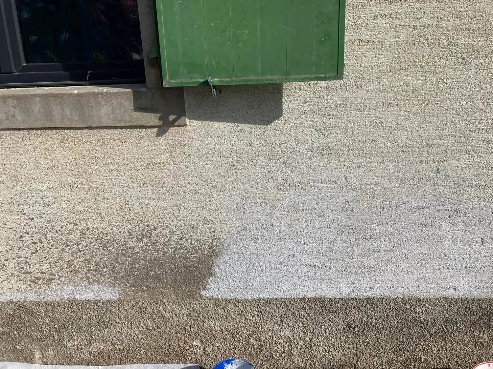
Avant AprèsEntreprise familiale fondée à Grandson par Joseph Beati.
Le plus haut titre du métier de plâtrier-peintre en Suisse.
L’une des cinq entreprises vaudoises labellisées pour leur conformité écologique.
Des apprentis accompagnés jusqu’au CFC depuis la création.
Cinq métiers, une seule équipe.
Du plâtre brut à la dernière couche, un seul interlocuteur suit votre chantier. Moins d’intermédiaires, moins de surprises.
-
Cloisons, faux plafonds, chapes sèches : la structure propre et droite sur laquelle tout le reste repose. Plafonds acoustiques compris.
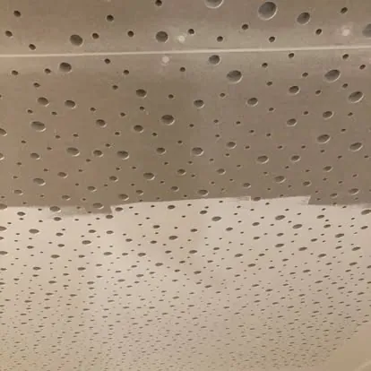
-
Peinture en tout genre, crépis, enduits décoratifs et motifs peints à la main. Jusqu’à la pose de feuille d’or quand le projet le demande.
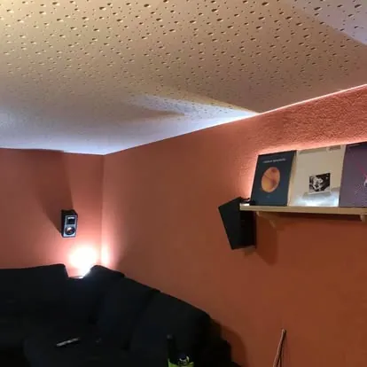
-
Pose soignée de papiers peints et panoramiques, raccords invisibles, supports préparés dans les règles. Motifs graphiques bienvenus.
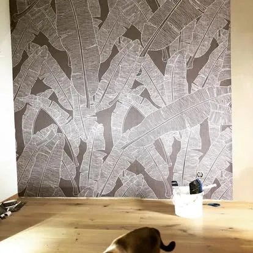
-
Rénovation et peinture de façades, crépis, isolation périphérique et insufflage. Pour protéger la maison autant que pour l’embellir.
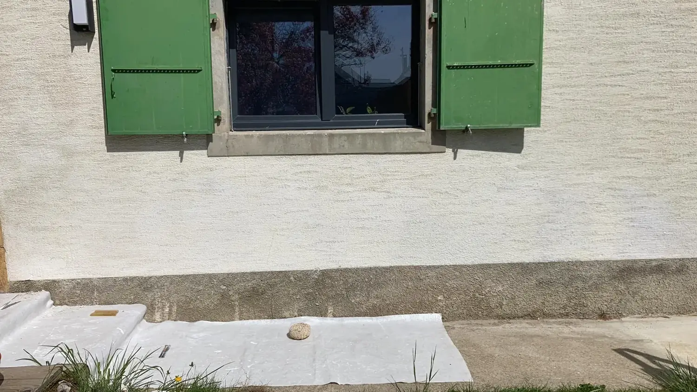
-
Projets de coloration, choix entre solution écologique ou standard, et expertise des problèmes de finition ou de conception avant qu’ils ne coûtent cher.
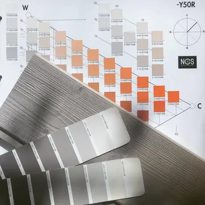
La différence se voit.
Faites glisser le curseur : même pièce, même lumière, même suspension. Seul le mur a changé.
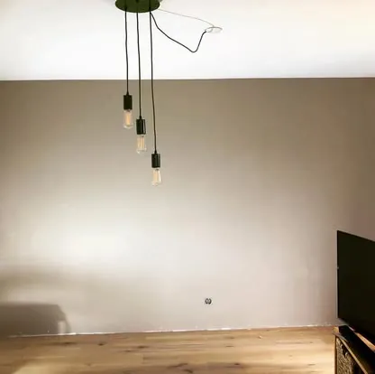
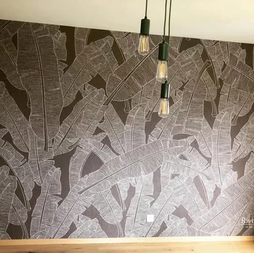
Avant Après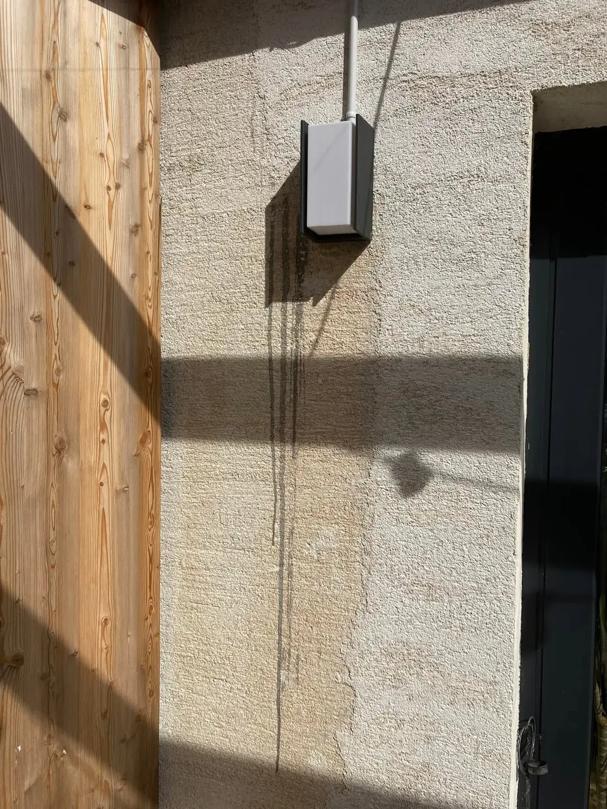
Avant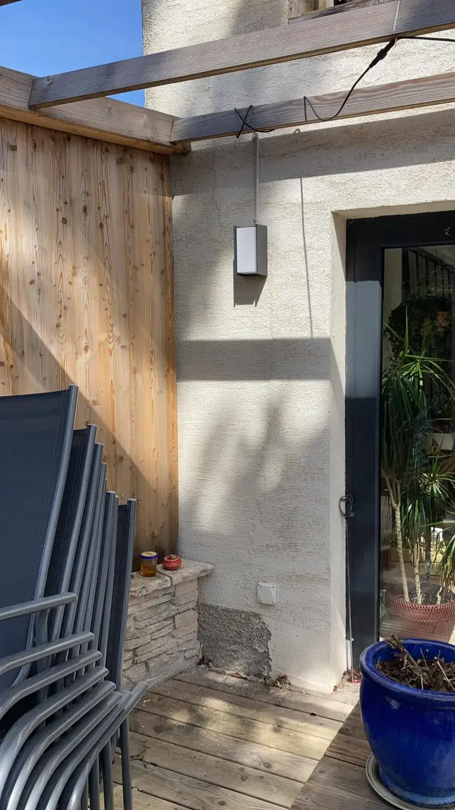
AprèsUne façade qui retrouve sa lumière
Coulures, salissures, crépi fatigué : une façade bien traitée protège le bâti et change l’allure de toute la maison.
Des murs qui racontent quelque chose.
Une sélection de chantiers récents, du plus sobre au plus audacieux.
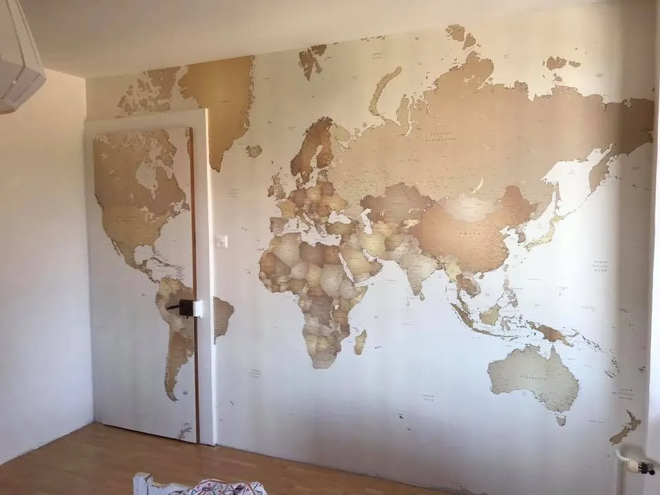
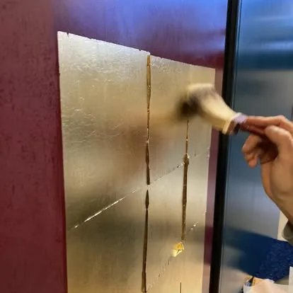
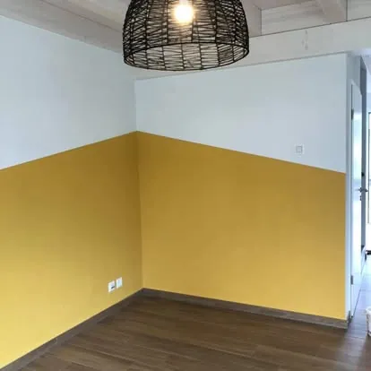
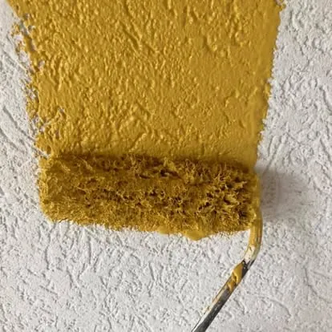
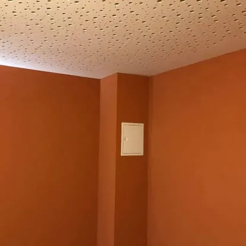
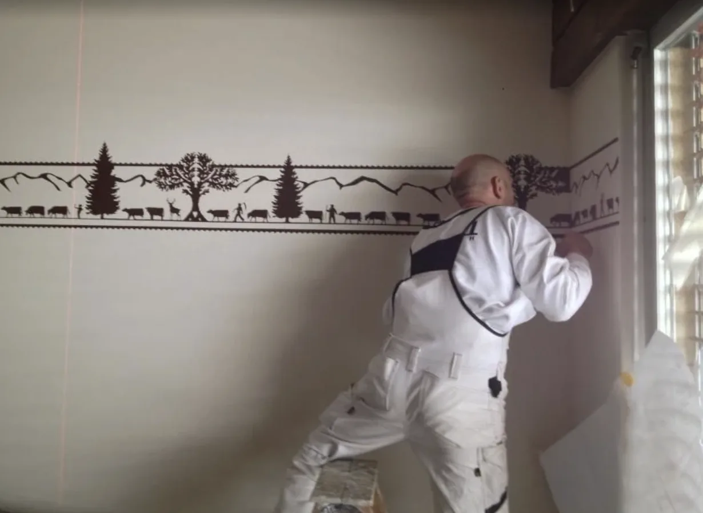
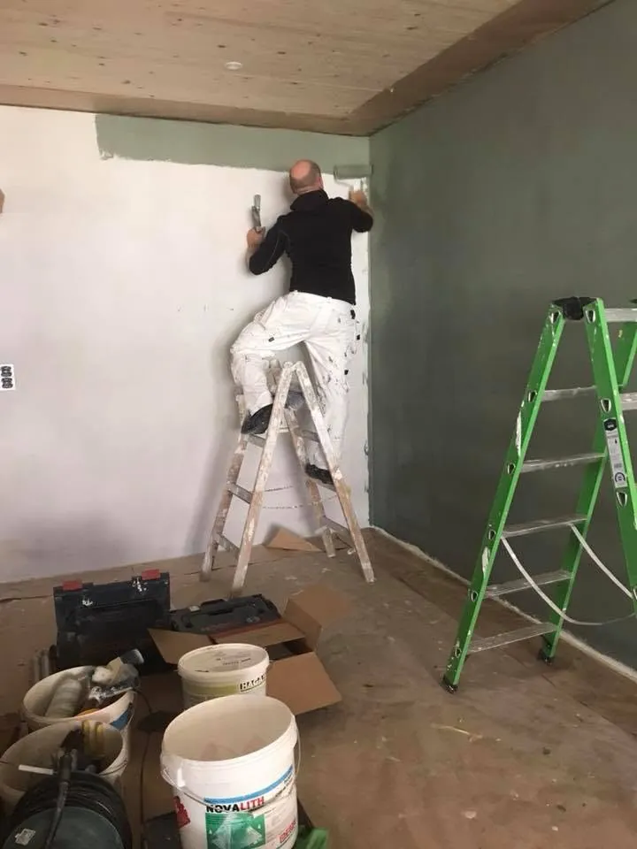
Sans solvants. Sans biocides. Sans compromis.
Beati Peinture fait partie des cinq entreprises vaudoises à avoir obtenu du canton de Vaud le label de conformité écologique.
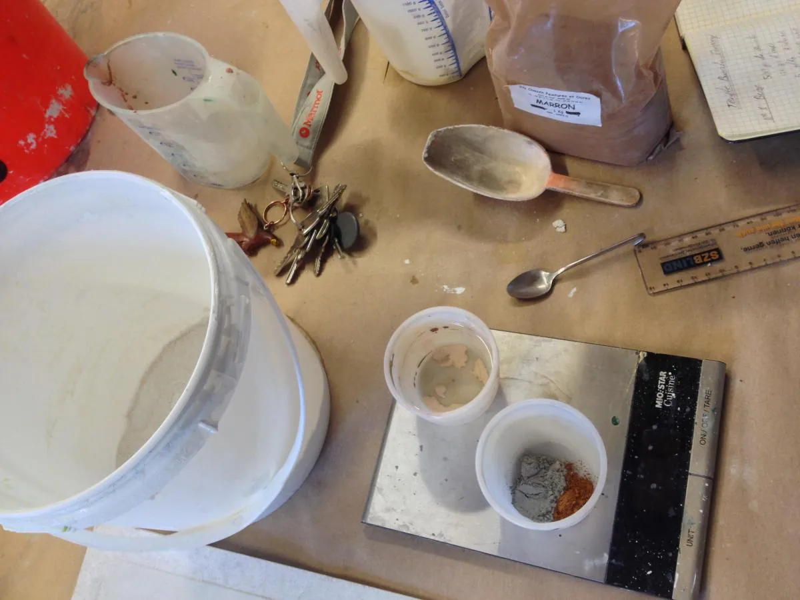
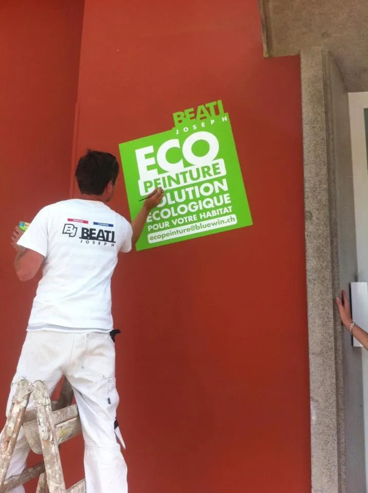
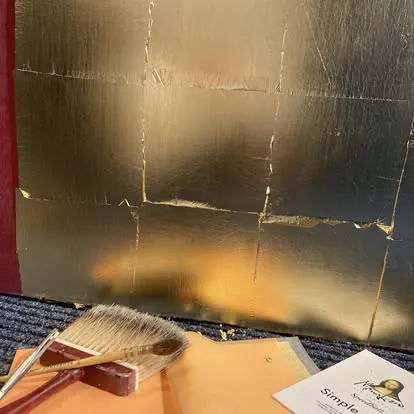
Nous privilégions des produits respectueux de l’environnement, jusqu’à 99 % issus de matières renouvelables : minérales, chaux, argile, caséine. Pour un intérieur plus sain, sans renoncer à la tenue ni à la couleur.
- Chaux
- Silicate
- Argile
- Caséine
- Peinture à l’huile
- Enduit chaux & ciment blanc
- 01Des eaux de lavage traitées
Notre atelier est équipé pour traiter les eaux usées : aucun rejet de polluants dans nos lacs et nos rivières.
- 02Des fournisseurs de proximité
Nous travaillons avec des fournisseurs locaux, eux-mêmes engagés pour l’environnement.
- 03Une équipe formée
Chaque collaborateur est formé aux techniques éco-responsables, pour les générations qui viennent.
- 04Le choix vous appartient
Écologique ou standard : nous vous conseillons la bonne solution technique, à un prix raisonnable.
Une affaire de famille, depuis 1977.
Familiale, formatrice, sociale : trois mots qui décrivent notre manière de travailler depuis près de cinquante ans.
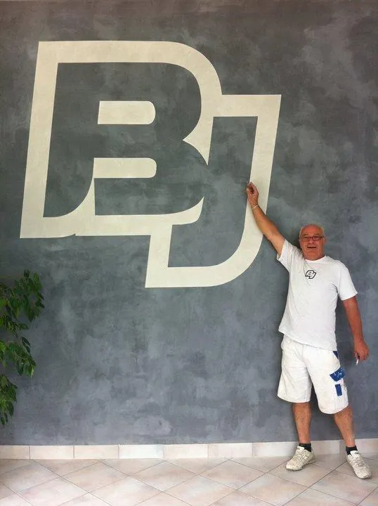
L’entreprise Beati a vu le jour le 1er juin 1977. Joseph Beati en a fait une entreprise familiale qui a su évoluer avec son temps. Avec l’arrivée de ses deux fils, Lionel et Steve, elle a pris un tournant écologique et social.
Entreprise de proximité, nous travaillons dans un climat à la fois professionnel et chaleureux, toujours à l’écoute de nos mandataires. Une dizaine de personnes, apprentis compris, filles et garçons.
- 1977Fondation à Grandson
Joseph Beati crée l’entreprise de plâtrerie-peinture le 1er juin.
- La relèveLionel et Steve rejoignent leur père
La deuxième génération engage le virage écologique et le label cantonal.
- 2015Coup de cœur du Prix AEIP
Distinction pour l’intégration professionnelle de personnes en situation de handicap, remise à Lausanne.
- 2018La tour des cheminots, Yverdon-les-Bains
Participation à la rénovation de 55 logements, saluée par La Région.
- Aujourd’huiMaîtrise fédérale, apprentis en formation
Toujours à Grandson, Avenue de la Gare 1.
Formatrice
Depuis sa création, l’entreprise accompagne ses apprentis jusqu’à l’obtention du CFC de plâtrier-peintre.
Sociale
Nos portes sont ouvertes aux jeunes de la Fondation du Repuis, du SEMO-Nord et de l’EVAM.
Éco-responsable
Des matières saines, des eaux traitées, des fournisseurs locaux. Et un prix qui reste raisonnable.
Ce qu’on dit de nous.
Cette année encore, Lionel Beati de Beati Peinture a réalisé le fond du décor de notre soirée de gymnastique, et en un temps record, expérience oblige !
Une fois n’est pas coutume, Beati Peinture est venu peindre les décors de la soirée de gymnastique avec nous.
Coup de cœur du Prix 2015 de l’intégration professionnelle de personnes en situation de handicap.
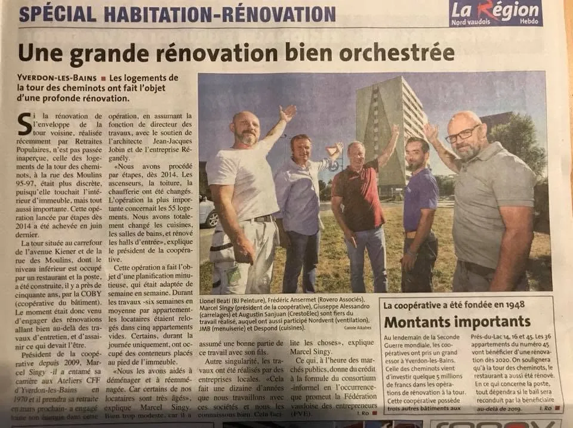
« Une grande rénovation bien orchestrée »
À Yverdon-les-Bains, les 55 logements de la tour des cheminots ont fait l’objet d’une rénovation profonde, confiée à des entreprises de la région. Lionel Beati y figure aux côtés des autres artisans du chantier.
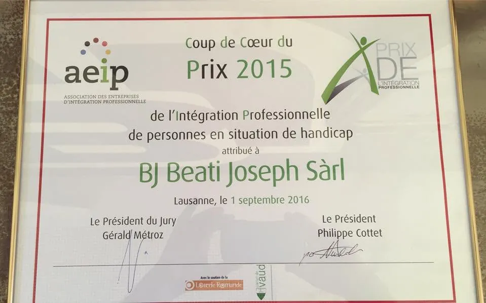
Diplôme AEIP « Coup de cœur du Prix 2015 », attribué à BJ Beati Joseph Sàrl.
Parlons de votre projet.
Deux minutes pour nous décrire vos travaux. Nous vous rappelons pour fixer une visite et établir un devis détaillé.